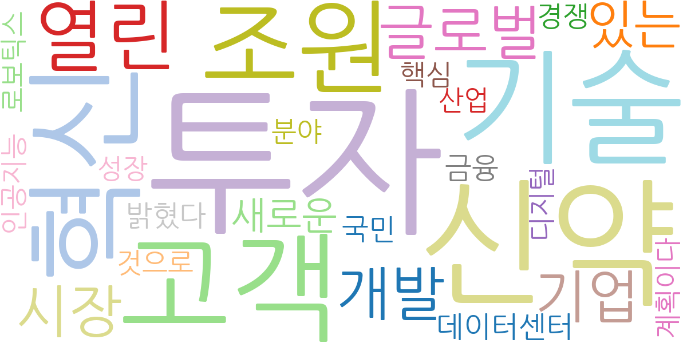
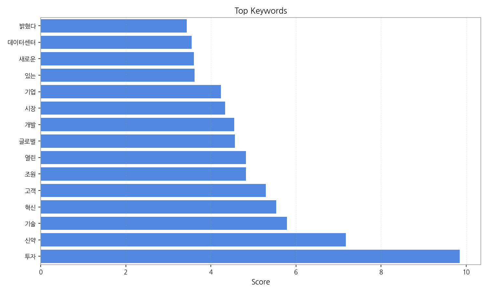
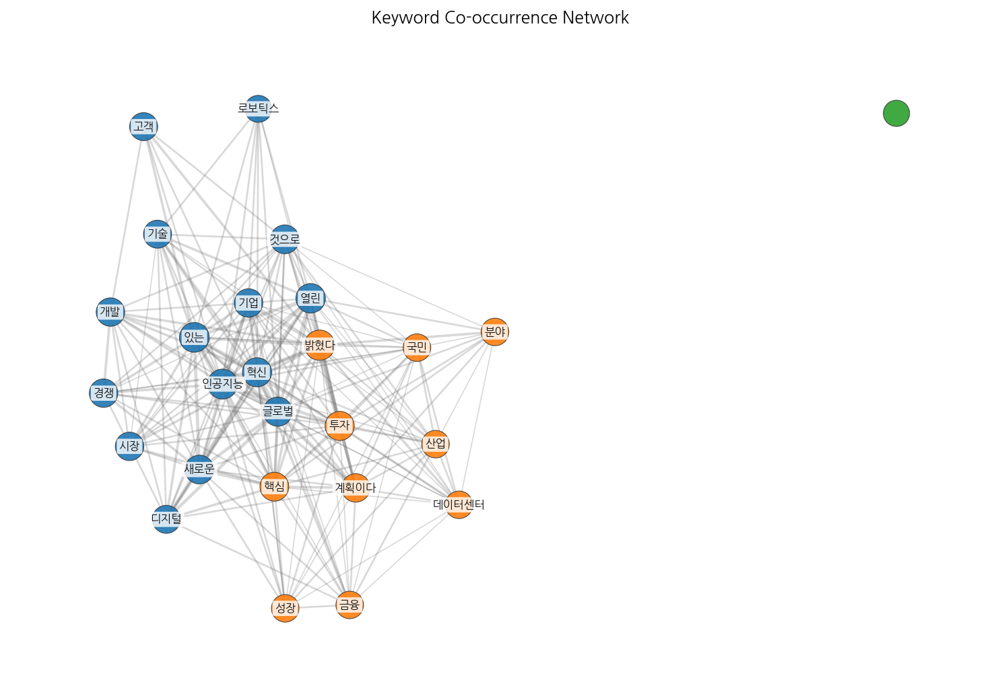
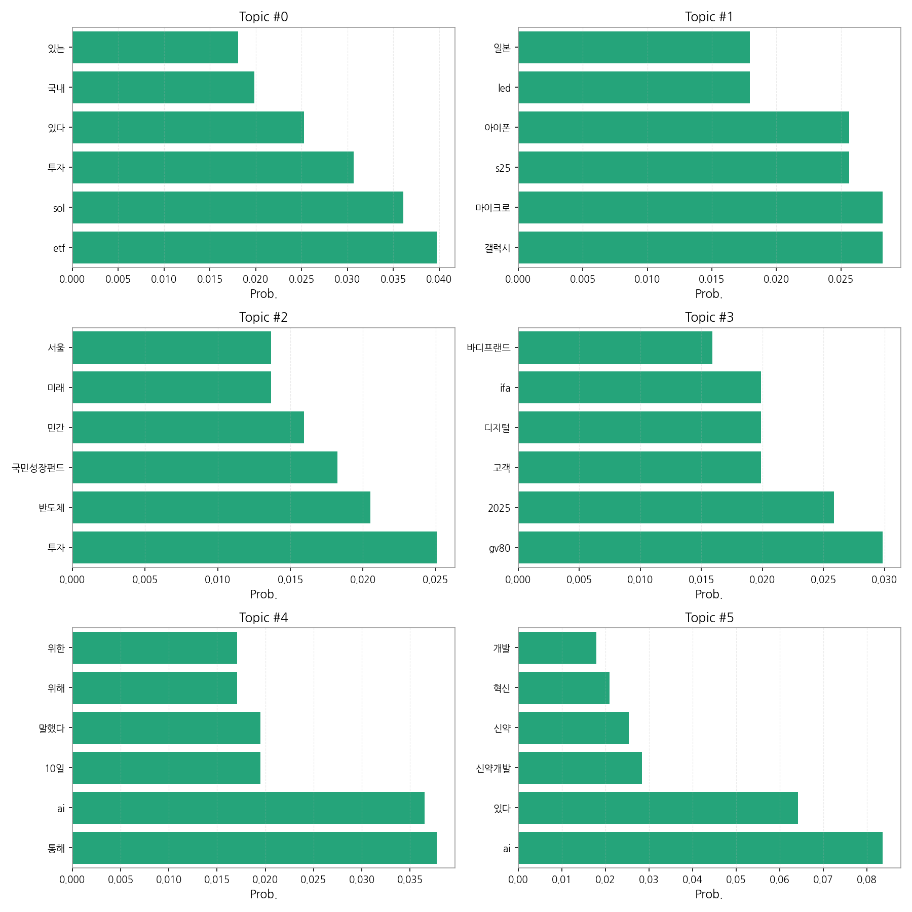
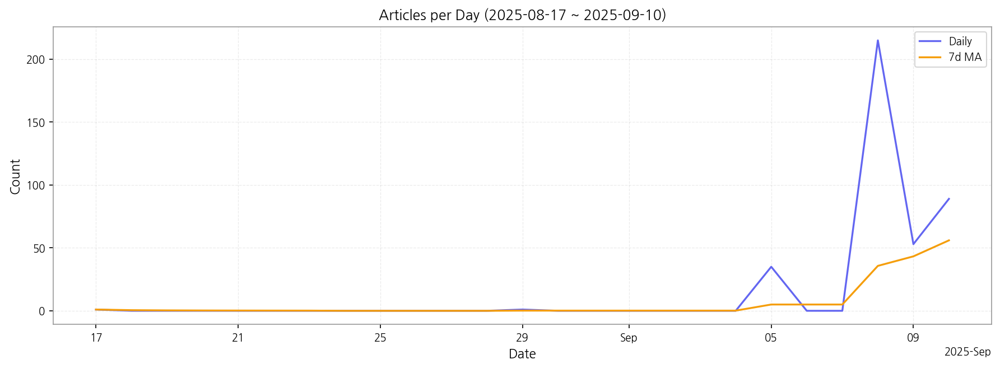

1) 상위 토픽을 3개 주제로 묶어 핵심 맥락을 설명하면 다음과 같습니다. 첫째, 투자 및 경제는 ETF, 국내 투자 시장, 반도체 산업, 국민성장펀드 등에 대한 기사가 다수를 차지하며, 국내외 경제 동향과 투자 전략에 대한 관심을 반영합니다. 둘째, 기술 및 산업은 AI, 신약 개발, 자동차(GV80 등), 스마트폰(갤럭시 S25, 아이폰) 등 첨단 기술과 관련 산업의 발전 및 경쟁 상황을 보여줍니다. 셋째, 소비재 및 서비스는 소비자들의 관심을 반영하는 자동차 신차 출시, 브랜드 경쟁, 디지털 기술과 관련된 서비스 등의 기사가 포함됩니다.
2) 최근 변화/스파이크를 짚어보면, 2025년 9월 5일부터 9월 10일 사이에 기사 수가 급증하였습니다. 이는 특정 이벤트 또는 뉴스에 의한 집중적인 보도를 시사하며, 해당 기간의 뉴스 내용을 분석하여 그 원인을 파악해야 합니다.
3) 실무 인사이트 3가지:

| Rank | Keyword | Score |
|---|---|---|
| 1 | 투자 | 9.849 |
| 2 | 신약 | 7.169 |
| 3 | 기술 | 5.785 |
| 4 | 혁신 | 5.535 |
| 5 | 고객 | 5.292 |
| 6 | 조원 | 4.823 |
| 7 | 열린 | 4.823 |
| 8 | 글로벌 | 4.565 |
| 9 | 개발 | 4.546 |
| 10 | 시장 | 4.331 |
| 11 | 기업 | 4.232 |
| 12 | 있는 | 3.615 |
| 13 | 새로운 | 3.597 |
| 14 | 데이터센터 | 3.545 |
| 15 | 밝혔다 | 3.436 |




1) 상위 토픽을 3개 주제로 묶어 핵심 맥락을 설명하면 다음과 같습니다. 첫째, 투자 및 경제는 ETF, 국내 투자 시장, 반도체 산업, 국민성장펀드 등에 대한 기사가 다수를 차지하며, 국내외 경제 동향과 투자 전략에 대한 관심을 반영합니다. 둘째, 기술 및 산업은 AI, 신약 개발, 자동차(GV80 등), 스마트폰(갤럭시 S25, 아이폰) 등 첨단 기술과 관련 산업의 발전 및 경쟁 상황을 보여줍니다. 셋째, 소비재 및 서비스는 소비자들의 관심을 반영하는 자동차 신차 출시, 브랜드 경쟁, 디지털 기술과 관련된 서비스 등의 기사가 포함됩니다.
2) 최근 변화/스파이크를 짚어보면, 2025년 9월 5일부터 9월 10일 사이에 기사 수가 급증하였습니다. 이는 특정 이벤트 또는 뉴스에 의한 집중적인 보도를 시사하며, 해당 기간의 뉴스 내용을 분석하여 그 원인을 파악해야 합니다.
3) 실무 인사이트 3가지:
| Idea | Target | Value Prop | Score |
|---|---|---|---|
| 실시간 투자 정보 및 위험 관리 시스템 | 개인 투자자, 헤지펀드, 자산운용사, 금융기관 | 뉴스 기사, 소셜 미디어, 시장 데이터를 실시간으로 분석하여 투자 포트폴리오에 대한 위험을 예측하고 관리하는 시스템입니다. 개인 맞춤형 투자 전략 제안 및 알림 기능을 제공하여 투자 효율을 높입니다. | 4.50 |
| AI 기반 신약 개발 가속화 플랫폼 | 제약회사, 바이오텍, 연구기관 | AI 기반의 신약 개발 플랫폼을 통해 신약 후보물질 발굴, 임상시험 설계 및 분석, 시장 예측 등 전 과정을 가속화합니다. 데이터 기반의 의사결정으로 성공 확률을 높이고 개발 기간과 비용을 절감합니다. | 4.20 |
| 첨단 기술 트렌드 분석 및 예측 서비스 | 기술 투자 기업, 컨설팅 회사, 정부 기관 | 뉴스 기사, 특허 정보, 연구 논문 등 다양한 데이터를 분석하여 첨단 기술 트렌드를 예측하고, 기술 개발 전략 및 투자 전략 수립을 지원하는 서비스입니다. 미래 기술 변화에 대한 통찰력을 제공합니다. | 3.80 |
| 소비자 트렌드 기반 맞춤형 마케팅 플랫폼 | 중소기업, 스타트업, 마케팅 에이전시 | 뉴스 기사, 소셜 미디어, 온라인 쇼핑 데이터 등을 분석하여 소비자 트렌드를 파악하고, 맞춤형 마케팅 전략을 제안하는 플랫폼입니다. 데이터 기반의 의사결정으로 마케팅 효율성을 높이고 ROI를 개선합니다. | 3.50 |
| 국민성장펀드 투자 전략 자문 서비스 | 개인 투자자, 금융기관 | 국민성장펀드 투자에 대한 전문적인 자문 서비스를 제공하여 투자 전략 수립, 포트폴리오 관리, 위험 관리 등을 지원합니다. 투자 목표 달성을 위한 맞춤형 솔루션을 제공합니다. | 3.00 |